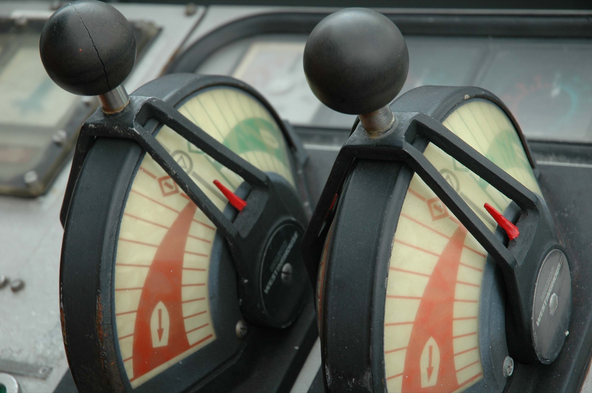

De duinovergang naar het oude strandhuis is lang en steil. Hijgend komt hij boven en leunt met zijn reistas tegen het tuinhek. Voor hem in het blonde helmgras van de duinpan ligt het jaren vijftig vakantiehuis. Links in de verte ziet hij een havenhoofd met zwart-witte vuurtoren en rechts beneden, in een oksel van het duin, ligt het dorp met zijn rode dakpannen. Dat is nu weer stil en tot zichzelf gekomen na het vertrek van de laatste zomergasten. Beneden op het strand aan de steigers van enkele zwart geteerde hutjes zijn een paar vissers in de weer met hun netten en bootjes. De donkere wolken boven de ongedurige zee passen bij het seizoen en bij zijn stemming.

Hij heeft geprobeerd aan zijn vrouw Benthe uit te leggen dat hij het hard nodig heeft, de afzondering van een vakantiehuis aan zee, alleen. Hij voelt zich ongelukkig, ondanks zijn goede baan als afdelingsmanager bij de bank en het bijbehorende riante salaris. Waar Benthe blij is met hun comfortabel voortkabbelende leven, mist hij de inspiratie, betekenis, voldoening. Steeds vaker denkt hij terug aan zijn tijd als gitarist en zanger bij de band. Benthe begrijpt hem niet, of wil hem niet begrijpen. ‘Noem het tijd voor bezinning,’ had hij tegen haar gezegd. Ze keek hem aan, maar zweeg. Gekwetst. Hij zag het in haar ogen.
Eenmaal binnen schuift hij eerst de gordijnen open en zet de ramen op een kier. Het strandhuis snakt naar licht en lucht. Net als hijzelf, denkt hij. Dan draait hij de verwarming hoog, pakt zijn tas uit en neemt een hete douche. De kilte in zijn lijf laat zich echter niet zomaar verdrijven. Dan maar een wijntje. Maar pas het derde glas brengt iets van de zo verlangde verdoving. Straks in het dorp iets eten, besluit hij.
Al na een paar keer herkent het dorp hem als de ongelukkige man uit het oude strandhuis. Hij praat nauwelijks en loopt voortdurend met hoofd en schouders gebogen. Urenlange strandwandelingen maakt hij, soms zit hij even neer en kijkt uit over zee, diep in gedachten. Ook vandaag loopt hij weer op het strand. Hij zwoegt. De wind striemt in zijn gezicht, zout zeeschuim prikt in zijn ogen. Of zijn het tranen? Hij likt de druppels van zijn lippen.
Als een magneet wordt hij naar de vissershutjes getrokken. Bij een van de steigers is een visser bezig zijn netten binnen te halen. Zodra hij dichterbij komt, ziet hij tot zijn verbazing dat de visser een vrouw is. Een grote vrouw, bijna even lang als hij. Een markante vrouw, met donkere krullen die een brede mond en opvallend groene ogen omlijsten. Nieuwsgierigheid verdringt voor heel even zijn somberte…
De vissersvrouw kijkt op. ‘Dag,’ groet ze hem.
Hij knikt terug.
Ze schudt haar netten leeg in de grijze kratten op de steiger: tong, schar en schol, een enkele krab en wat zeewier, oesters en mossels. ‘Ik zag je al eerder. Ben je alleen?’
‘Ja, mijn vrouw is thuis gebleven’, hoort hij zichzelf verrassend vrijmoedig antwoorden.
‘Houdt ze niet van het strand?’
Oké, de vissersvrouw is van de openhartige, concludeert hij. ‘Ik wilde even weg. Tijd voor mezelf, tijd voor bezinning.’
‘Zo, dat klinkt serieus.’
Hij zwijgt. Pas na enkele minuten verbreekt hij de stilte met een vraag die de aandacht afleidt van hemzelf. ‘Hoezo ben je visser? Bijzonder, een vrouw die vist.’
Ze legt de netten neer, komt overeind en staart bedachtzaam naar de zee. ‘Ik heb de visserij van mijn opa geërfd, als kind ging ik vaak met hem mee. Hij werd ziek, nu zo’n zes jaar geleden. De visserij was zijn leven. Hij zei altijd dat onze familie een verbond heeft met de zee. Dat we zout water in ons bloed hebben en avontuur in onze ziel.Ik heb mijn baan als schooljuf opgezegd et voilà.’ Ze draait zich naar hem toe voor zijn reactie. Maar die heeft hij niet. Hij hoort alleen de echo van haar woorden. En zijn eigen demonen. Hoe kan ze zo gemakkelijk haar leven omgooien? Een goed inkomen opgeven voor een onzeker bestaan? Een comfortabel beroep met status verruilen voor ruig en ondergewaardeerd werk in weer en wind? Het lijkt een bijna Bijbelse roeping. Wat vindt haar man ervan, als ze die heeft? Allemaal vragen die hij niet durft te stellen. Hij vindt zichzelf een lafbek en niet alleen hierom.
‘Intrigerend,’ is het enige wat hij uit weet te brengen. Dan loopt hij weg, terug naar het strandhuis.
’s Nachts droomt hij van een wondere wereld onder water. Hij ziet de meest uiteenlopende vissen om zich heen. Hij zwemt met ze, hij zwemt als een vis tussen de vissen. Hij is op zijn gemak, zij zijn op hun gemak.
De volgende dagen mijdt hij de vissersvrouw. Hij is jaloers op haar, op haar moed en haar vrijheid. Als een drenkeling worstelt hij zich door de angst van de dag en de wanhoop van de nacht. Tot hij plotseling grond onder zijn voeten lijkt te voelen, heel licht. Voorzichtig tast hij af, eerst met zijn tenen, daarna zachtjes verder, tot hij het aandurft met zijn volle voet… Ineens siddert de euforie van inzicht door zijn lijf, kippenvel tot aan zijn kruin.
Voor dag en dauw rukt hij zijn parka en tas van de stoel en beent het strandhuis uit. Linea recta naar het strand, naar de vissersvrouw. Hij begint te rennen, alsof hij zo de verloren tijd kan inhalen. Als ze er nu maar is, denkt hij opgewonden. Maar al gauw ziet hij in het morgenrood van de vroege zonsopgang haar silhouet op de steiger. Eigenlijk zou hij willen zwaaien en roepen, wild van extase.
Ze wacht hem op, alsof ze aanvoelt dat hij haar iets belangrijks komt vertellen. Zodra hij vlakbij is, gooit hij het eruit.
‘Ik ga! Breng je me weg?’
Ze wacht even, om zeker te weten dat hij het meent. Dan loopt ze resoluut naar de boot en gebaart: ‘Stap in.’
Zelfverzekerder dan hij in jaren was klimt hij aan boord. Hij zet zijn capuchon op, pakt met beide handen de bootbank vast en knikt haar nog eens bevestigend toe. Daarop start ze de motor, gooit de touwen los en vaart door de branding, langs de vuurtoren, over de deining van de golven naar open zee. Ver voorbij de horizon.
Uren later, in het schemerdonker, ziet het dorp haar terugkomen, alleen. Aan de steiger leegt ze haar netten in het licht van de vuurtoren, gewoon, zoals elke andere dag tot dan toe. En nog vaak nadien. Van de ongelukkige man heeft het dorp nooit meer iets gezien. Behalve de vissersvrouw, die vindt elk jaar rond deze tijd een mossel met parel in haar netten. Alsof hij haar een dankoffer stuurt, haar, zijn eigen Nike, die hem hielp de strijd met zijn titanen te overwinnen.
Copyright: Marjan de Kort.